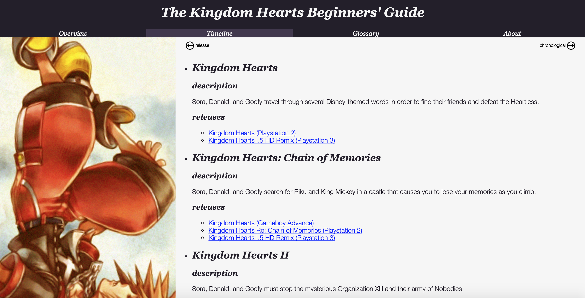

Kingdom Hearts Timeline
This Kingdom Hearts timeline was part of a project I did for another class. It displays the games in the series in both release order, and chronological order. I wanted to make this web-app because when people ask me about the series, they are often confused as to the order of the series. This was made to provide an easy way to see where each game in the series takes place.
The data for each game was stored in a JSON file. The file was loaded with AJAX and javascript was used to sort them based on their release order, or their chronological order. Pressing a button would change this ordering, which was visually depicted using a CSS transition. Button presses utilized the EventEmitter library.
 back to projects